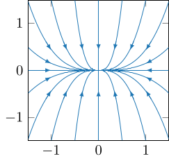
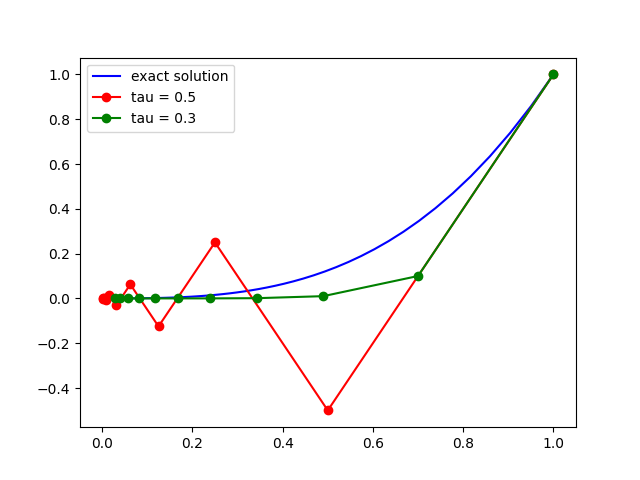
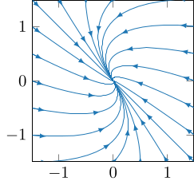
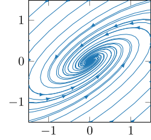
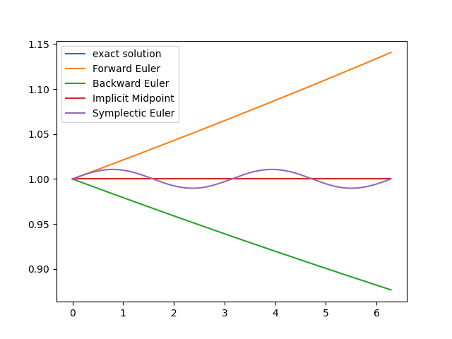

2. 線形力学系
ここでは二次元以上の線形力学系について説明する. 線型写像は行列を用いて表示を与えることができるため, この行列を用いて解の表示を与えることができる. また, 二次元以上の線形力学系の性質は, 行列の固有値や固有ベクトルといった線形代数の概念を用いて説明される. ここでは主に二次元の線形力学系を対象に, 解の明示的な求め方や性質について紹介する.
2.1: 線形力学系と行列指数関数
一次元力学系 \[ \left\{\begin{array}{rl} x' &= ax, \cr x(0) &= x_0, \end{array}\right. \qquad x_{n+1} = ax_n \] に対しては, 解をそれぞれ \[ x(t) = e^{at}x_0,\qquad x_n = a^n x_0 \] と表すことができるのだった. これに対応して, 二次元以上の線形力学系は, 行列 $A$ を用いて \[ \left\{\begin{array}{rl} \mathbf{x}' &= A\mathbf{x}, \cr \mathbf{x}(0) &= \mathbf{x}_0, \end{array}\right. \qquad \mathbf{x}_{n+1} = A\mathbf{x}_n \] と表すことができ, さらにこれらの解はそれぞれ \[ \mathbf{x}(t) = e^{tA}\mathbf{x}_0,\qquad \mathbf{x}_n = A^n\mathbf{x}_0 \] と表すことができる. ここで, 右は単に行列のべき乗であり既知であると思われるが, 左の連続力学系に対する解の表示には 行列指数関数 が現れる. ここでは, この行列指数関数による解の表示や, 関連する時間離散化による近似について解説しよう.
- ベクトル値関数 $\mathbf{x}(t)\in \mathbb{R}^d$ と 線形写像 $\mathbf{f}: \mathbb{R}^d\to \mathbb{R}^d$ を用いて \[ \mathbf{x}' = \mathbf{f}(\mathbf{x}) \] と表される連続力学系 (特に自励系である) を 線形連続力学系 という.
- 線形写像 $F: \mathbb{R}^d\to \mathbb{R}^d$ を用いて \[ \mathbf{x}_{n+1} = F(\mathbf{x}_n) \] と表される離散力学系を 線形離散力学系 という.
- 線形連続力学系と線形離散力学系を総称して 線形力学系 (linear dynamical system) という.
写像 $\mathbf{f}:\mathbb{R}^d\to\mathbb{R}^d$ が線形であるとは, 任意の $c_1, c_2\in\mathbb{R}$ および $\mathbf{x}, \mathbf{y}\in\mathbb{R}^d$ に対し \[ \mathbf{f}(c_1\mathbf{x} + c_2\mathbf{y}) = c_1\mathbf{f}(\mathbf{x}) + c_2\mathbf{f}(\mathbf{y}) \] が成り立つことであり, 従って $\mathbf{x}$ を標準基底 $\mathbf{e}_1, \dots, \mathbf{e}_d$ の線型結合により \[ \mathbf{x} = \begin{pmatrix} x_1 \cr \vdots \cr x_d \end{pmatrix} = x_1\mathbf{e}_1 + \dots + x_d\mathbf{e}_d \] と表現したときに, \[ \begin{array}{rl} \mathbf{f}(\mathbf{x}) &= x_1\mathbf{f}(\mathbf{e}_1) + \dots + x_d\mathbf{f}(\mathbf{e}_d) \cr &= (\mathbf{f}(\mathbf{e}_1), \dots, \mathbf{f}(\mathbf{e}_d))\mathbf{x} \end{array} \] が成立する. ここで, $(\mathbf{f}(\mathbf{e}_1), \dots, \mathbf{f}(\mathbf{e}_d)) \in\mathbb{R}^{d\times d}$ なので, この正方行列を $A$ とおくと, 全ての線型写像 $\mathbf{f}:\mathbb{R}^d\to\mathbb{R}^d$ は, 対応する正方行列 $A\in\mathbb{R}^{d\times d}$ を用いて \[ \mathbf{f}(\mathbf{x}) = A\mathbf{x} \] と表すことができる. 従って, $d$ 次元線形力学系は, 正方行列 $A\in\mathbb{R}^{d\times d}$ を用いて \[ \mathbf{x}' = A\mathbf{x} \quad\text{もしくは}\quad \mathbf{x}_{n+1} = A\mathbf{x}_n \] と表される力学系のことに他ならない.
常微分方程式系 \[ \left\{\begin{array}{rl} x' &= x + 2y \cr y' &= 3x + 4y \end{array}\right. \] は, \[ \mathbf{x} = \begin{pmatrix} x \cr y \end{pmatrix}, \quad A = \begin{pmatrix} 1 & 2 \cr 3 & 4 \end{pmatrix} \] を用いて $\mathbf{x}' = A\mathbf{x}$ と表されるため, これは線形連続力学系である.
直観的には, 右辺が $x$ や $y$ の一次結合で表され, 定数項を含まないものが線形力学系である.
線形離散力学系 $\mathbf{x}_{n+1} = A\mathbf{x}_n$ の解が $\mathbf{x}_n = A^n\mathbf{x}_0$ であることは明らかだろう. 一方で, 線形連続力学系 \[ \left\{\begin{array}{rl} \mathbf{x}' &= A\mathbf{x}, \cr \mathbf{x}(0) &= \mathbf{x}_0 \end{array}\right. \] の解はそれほど明らかでは無い. 線形連続力学系の解の表示には, 大きく分けて 行列指数関数 を用いるものと, 行列 $A$ の固有値, 固有ベクトルを用いるもの $2$ つがあるが, まずは行列指数関数について紹介しよう.
正方行列 $A$ に対し, \[ e^{A} = \sum_{k=0}^\infty \dfrac{A^k}{k!} = I + A + \dfrac{A^2}{2} + \dfrac{A^3}{3!} + \dots \] を 行列指数関数 という.
- 上の定義より, \[ e^{tA} = \sum_{k=0}^\infty \dfrac{(tA)^k}{k!} = I + tA + \dfrac{(tA)^2}{2!} + \dfrac{(tA)^3}{3!} + \dots \] である. $e^{at}$ のマクローリン展開 \[ e^{at} = \sum_{k=0}^{\infty}\dfrac{(at)^k}{k!} = 1 + at + \dfrac{(at)^2}{2!} + \dfrac{(at)^3}{3!} + \dots \] と比較すれば, 自然な定義であることがわかる
- なお, \[ \|e^{A}\| = \left\|\displaystyle\sum_{k=0}^\infty \dfrac{A^k}{k!}\right\| \le \displaystyle\sum_{k=0}^\infty \dfrac{\|A\|^k}{k!} = e^{\|A\|} \] であることから, 任意の $A\in\mathbb{R}^{d\times d}$ に対し $e^{A}\in\mathbb{R}^{d\times d}$ は well-defined である ($e^A$ の成分に $\infty$ が現れたりすることは無い).
行列指数関数の性質をいくつかまとめておこう:
正方行列 $A\in\mathbb{R}^{d\times d}$ に対し, 以下が成立する:
- $e^{O} = I,\quad e^{tI} = e^t I, \quad (e^{A})^{\operatorname{T}} = e^{A^{\operatorname{T}}} ,\quad e^{sA}e^{tA} = e^{(s+t)A}$.
- $\dfrac{d}{dt}e^{tA} = Ae^{tA} = e^{tA}A$.
- 行列 $A\in\mathbb{R}^{d\times d}$ の固有値 $\lambda_i\in\mathbb{C}$ に対応する固有ベクトル $\mathbf{v}_i\in\mathbb{C}^d$ は, 行列 $e^{tA}\in\mathbb{R}^{d\times d}$ の固有値 $e^{\lambda_i t}\in\mathbb{C}$ に対応する固有ベクトルになる.
- 証明略.
- $e^{tA}$ を定める級数は (ワイエルシュトラスの $M$ 判定法より) 任意の有界区間上で一様収束する. また, 各項を微分した級数も同様に任意の有界区間上で一様収束することを示せるため, 項別微分可能である: \[ \begin{array}{rl} \dfrac{d}{dt}e^{tA} &= \dfrac{d}{dt}\displaystyle\sum_{k=0}^{\infty}\dfrac{(tA)^k}{k!} \cr &= \displaystyle\sum_{k=1}^{\infty}\dfrac{t^{k-1}A^k}{(k-1)!} \cr &= Ae^{tA} = e^{tA}A. \end{array} \]
- 行列 $A$ の固有値 $\lambda_i$ および対応する固有ベクトル $\mathbf{v}_i$ に対して \[ A^k\mathbf{v}_i = A^{k-1}(A\mathbf{v}_i) = \lambda_iA^{k-1}\mathbf{v}_i = \dots = \lambda_i^{k}\mathbf{v}_i \] であることに注意すれば, \[ e^{tA}\mathbf{v}_i = \sum_{k=0}^\infty \dfrac{(tA)^k}{k!}\mathbf{v}_i = \sum_{k=0}^\infty \dfrac{(\lambda_i t)^k}{k!}\mathbf{v}_i = e^{\lambda_i t}\mathbf{v}_i \] が得られる.
上の性質を用いて, $\mathbf{x}(t) = e^{tA}\mathbf{x}_0$ が \[ \left\{\begin{array}{rl} \mathbf{x}' &= A\mathbf{x}, \cr \mathbf{x}(0) &= \mathbf{x}_0 \end{array}\right. \] を満たすことを確認せよ.
$\mathbf{x}(t) = e^{tA}\mathbf{x}_0$ ならば \[ \mathbf{x}' = \dfrac{d}{dt}e^{tA}\mathbf{x}_0 = Ae^{tA}\mathbf{x}_0 = A\mathbf{x} \] となり, また $\mathbf{x}(0) = e^O\mathbf{x}_0 = I\mathbf{x}_0 = \mathbf{x}_0$ である.
上の例題より, $\mathbf{x}' = A\mathbf{x}$ は確かに連続力学系であることがわかる. 実際, $\Phi_t(\mathbf{x}) = e^{tA}\mathbf{x}$ により定義される時間発展写像 $\Phi_t: \mathbb{R}^d\to\mathbb{R}^d$ たちの族 $\{\Phi_t\}_{t\in\mathbb{R}}$ は, \[ \begin{array}{cl} \Phi_0 = \operatorname{id}_{\mathbb{R}^d} &\quad (\because e^O = I), \cr \Phi_s\circ\Phi_t = \Phi_{s+t} &\quad (\because e^{tA}e^{sA} = e^{(t+s)A}) \end{array} \] を満たすためフローであり, $\mathbf{x}' = A\mathbf{x}$ はこのフローが定める連続力学系である.
次は, 行列指数関数による解の表示 $\mathbf{x}(t) = e^{tA}\mathbf{x}_0$ と, 行列 $A$ の固有値, 固有ベクトルとの対応を見てみよう.
線形常微分方程式系 \[ \mathbf{x}' = A\mathbf{x} \] について, 行列 $A\in\mathbb{R}^{d\times d}$ の固有値 $\lambda_i$ が全て異なる実数ならば, 一般解は行列 $A$ の固有値 $\lambda_i$ と対応する固有ベクトル $\mathbf{v}_i$ を用いて \[ \mathbf{x}(t) = \sum_{i=1}^d c_i e^{\lambda_i t}\mathbf{v}_i \] と表される.
実正方行列 $A\in\mathbb{R}^{d\times d}$ の固有値 $\lambda_i$ が全て異なる実数である場合, 対応する固有ベクトル $\mathbf{v}_i\in\mathbb{R}^d$ は (実ベクトルであり) 線形独立である. またこのとき, 固有ベクトル $\mathbf{v}_i$ を第 $i$ 列にもつ行列 $P\in\mathbb{R}^{d\times d}$ を用いて, 行列 $A$ は \[ A = \underbrace{\begin{pmatrix} \mathbf{v}_1, \dots, \mathbf{v}_d \end{pmatrix}}_{=P}\underbrace{\begin{pmatrix} \lambda_1 & & \cr & \ddots & \cr & & \lambda_d \end{pmatrix}}_{=D}\underbrace{\begin{pmatrix} \mathbf{v}_1, \dots, \mathbf{v}_d \end{pmatrix}^{-1}}_{=P^{-1}} \] と対角化可能である ($\mathbf{v}_i$ たちの線型独立性より行列 $P$ が正則行列であることが従うことに注意). 同様に, $e^{tA}\in\mathbb{R}^{d\times d}$ も固有値 $e^{\lambda_i t}\in\mathbb{R}$ に対応する固有ベクトル $\mathbf{v}_i$ を第 $i$ 列にもつ行列 $P$ を用いて対角化が可能である. 実際, \[ \begin{array}{rl} e^{tA} &= \displaystyle\sum_{k=0}^{\infty}\dfrac{(tPDP^{-1})^k}{k!} \cr &= \displaystyle\sum_{k=0}^{\infty}\dfrac{t^kPD^kP^{-1}}{k!} \cr &= Pe^{tD}P^{-1} \cr &= P\begin{pmatrix} e^{\lambda_1t} & & \cr & \ddots & \cr & & e^{\lambda_dt} \end{pmatrix}P^{-1} \end{array} \] である.
ところで, $d$ 個のベクトル $\mathbf{v}_i\in\mathbb{R}^d$ $(i=1, \dots, d)$ が線形独立であることから, 任意の $\mathbb{R}^d$ のベクトルは $\mathbf{v}_i$ たちの線型結合で表すことができる. 特に, 初期値 $\mathbf{x}(0)$ を \[ \mathbf{x}(0) = c_1\mathbf{v}_1 + \dots + c_d\mathbf{v}_d = \underbrace{\begin{pmatrix} \mathbf{v}_1, \dots, \mathbf{v}_d \end{pmatrix}}_{=P}\begin{pmatrix} c_1 \cr \vdots \cr c_d \end{pmatrix} \] と表すことで, \[ \begin{array}{rl} \mathbf{x}(t) &= e^{tA}\mathbf{x}(0) \cr &= P\begin{pmatrix} e^{\lambda_1t} & & \cr & \ddots & \cr & & e^{\lambda_dt} \end{pmatrix}P^{-1}P\begin{pmatrix} c_1 \cr \vdots \cr c_d \end{pmatrix} \cr &= \begin{pmatrix} \mathbf{v}_1, \dots, \mathbf{v}_d \end{pmatrix}\begin{pmatrix} c_1e^{\lambda_1t} \cr \vdots \cr c_de^{\lambda_dt} \end{pmatrix} \cr &= \displaystyle\sum_{i=1}^dc_ie^{\lambda_i t}\mathbf{v}_i \end{array} \] が得られる.
実際には, これと同様の議論は行列固有値が重複度を持つ場合や複素数値となる場合にも, 対角化の代わりにジョルダン標準形などを用いることで可能である. ただし, この資料では一般的な議論はせず, 後に二次元線形力学系の分類を行う際に具体例として言及するに留める.
簡単な例として \[ \begin{pmatrix} x' \cr y' \end{pmatrix} = \begin{pmatrix} -x \cr -3y \end{pmatrix} = \underbrace{\begin{pmatrix} -1 & 0 \cr 0 & -3 \end{pmatrix}}_{=A}\begin{pmatrix} x \cr y \end{pmatrix} \] を考えてみよう. この常微分方程式系の一般解は, $x$, $y$ それぞれについて計算することで \[ x(t) = C_1e^{-t},\qquad y(t) = C_2e^{-3t} \] であることが明らかであるが, 上の定理からも同じ結論が得られることを確認してみよう. いま, 行列 $A$ の固有値は $\lambda_1 = -1$, $\lambda_2 = -3$ であり, 対応する固有ベクトルは例えば \[ \mathbf{v}_1 = \begin{pmatrix} 1 \cr 0 \end{pmatrix},\qquad \mathbf{v}_2 = \begin{pmatrix} 0 \cr 1 \end{pmatrix} \] であるため, 上の定理より \[ \mathbf{x}(t) = c_1e^{\lambda_1 t}\mathbf{v}_1 + c_2e^{\lambda_2 t}\mathbf{v}_2 = \begin{pmatrix} c_1e^{-t} \cr c_2e^{-3t} \end{pmatrix} \] は一般解である. なお, この二次元線形連続力学系の相図は, 例えば以下のようになる:

なお, $c_1$ や $c_2$ を適切に選ぶことで \[ \mathbf{x}(t) = e^{\lambda_1t}\mathbf{v}_1, \qquad \mathbf{x}(t) = e^{\lambda_2t}\mathbf{v}_2 \] も (それぞれ適切な初期値に対する) 解であることがわかる. これらは相図上では, $\mathbf{v}_1$, $\mathbf{v}_2$ 方向の直線上の軌道として現れる. このように, 行列 $A$ の固有ベクトルは, 線形力学系の解の挙動において特徴的な振る舞いをする方向を表す.
常微分方程式系 \[ \left\{\begin{array}{rl} x' &= x + 3y \cr y' &= x - y \end{array}\right. \] の一般解を求めよ.
いま, \[ \mathbf{x} = \begin{pmatrix} x \cr y \end{pmatrix}, \quad A = \begin{pmatrix} 1 & 3 \cr 1 & -1 \end{pmatrix} \] とすると, $\mathbf{x}' = A\mathbf{x}$ である. 行列 $A$ の固有値は, 固有方程式 \[ 0 = \det (\lambda I-A) = (\lambda-2)(\lambda+2) \] の解 $\lambda_1 = -2$, $\lambda_2 = 2$ であり, 対応する固有ベクトルは \[ \mathbf{0} = (\lambda_1 I-A)\mathbf{v}_1 = \begin{pmatrix} -3 & -3 \cr -1 & -1 \end{pmatrix}\mathbf{v}_1, \]\[ \mathbf{0} = (\lambda_2 I-A)\mathbf{v}_2 = \begin{pmatrix} 1 & -3 \cr -1 & 3 \end{pmatrix}\mathbf{v}_2, \] を満たす $\mathbf{0}$ でないベクトルであり, 例えば \[ \mathbf{v}_1 = \begin{pmatrix} 1 \cr -1 \end{pmatrix},\quad \mathbf{v}_2 = \begin{pmatrix} 3 \cr 1 \end{pmatrix} \] である. 従って \[ \mathbf{x}(t) = c_1e^{\lambda_1 t}\mathbf{v}_1 + c_2e^{\lambda_2 t}\mathbf{v}_2 = c_1e^{-2 t}\begin{pmatrix} 1 \cr -1 \end{pmatrix} + c_2e^{2t}\begin{pmatrix} 3 \cr 1 \end{pmatrix} \] は一般解である. なお, この二次元線形連続力学系の相図は, 例えば以下のようになる:

ところで, 上の定理や例のように行列 $A$ の固有値が全て異なる実数であり, 結果として常微分方程式系 $\mathbf{x}' = A\mathbf{x}$ の解が \[ \mathbf{x}(t) = e^{tA}\mathbf{x}(0) = \sum_{i=1}^d c_ie^{\lambda_i t}\mathbf{v}_i \] と表されているとき, \[ \text{行列 $A$ の全ての固有値が負} \implies \lim_{t\to\infty}\mathbf{x}(t) = \lim_{t\to\infty}e^{tA}\mathbf{x}(0) = \mathbf{0} \] が成立する. 実は「行列 $A$ の固有値が全て異なる実数である」という仮定が無くとも, 同様の性質は成立する. 詳細な証明は述べないが, 以下の事実に言及しておこう:
$\text{$A$ の全ての固有値の実部が負}\impliedby e^{tA}\to O\quad (t\to\infty)$ の証明の概略のみ述べておこう. 行列 $A\in\mathbb{R}^{d\times d}$ の固有値 $\lambda_i\in\mathbb{C}$ と対応する固有ベクトル $\mathbf{v}_i\in\mathbb{C}^d$ に対し, 行列 $e^{tA}\in\mathbb{R}^{d\times d}$ の固有値は $e^{\lambda_i t}\in\mathbb{C}$, 対応する固有ベクトルは $\mathbf{v}_i\in\mathbb{C}^d$ であった. 従って, $e^{tA}\to O\quad (t\to\infty)$ ならば任意の $i = 1,\dots, d$ に対して \[ \|e^{tA}\mathbf{v}_i\| = |e^{t\lambda_i}|\|\mathbf{v}_i\|\to 0 \quad (t\to\infty) \] となる. ここでオイラーの公式 \[ e^{iz} = \cos z + i\sin z\quad (z\in\mathbb{R}) \] より, \[ |e^{t\lambda_i}| = |e^{t\operatorname{Re}\lambda_i}|\underbrace{|e^{t\operatorname{Im}\lambda_i i}|}_{=1} = e^{t\operatorname{Re}\lambda_i} \] であり, 従って $\operatorname{Re}\lambda_i\lt 0$ が得られる.
ここまでに, $\mathbf{x}' = A\mathbf{x}$ の解について述べたが, これとオイラー法による近似解と比較してみよう. 時間刻み幅 $\tau\gt 0$ を用いて $t_n = n\tau$ と定める. まず, 線形連続力学系 \[ \left\{\begin{array}{rl} \mathbf{x}' &= A\mathbf{x}, \cr \mathbf{x}(0) &= \mathbf{x}_0 \end{array}\right. \] のフローは $\Phi_t(\mathbf{x}_0) = e^{tA}\mathbf{x}_0$ により定められる解作用素の族であったことから, 解 $\mathbf{x}(t)$ は \[ \mathbf{x}(t_{n+1}) = \Phi_{\tau}(\mathbf{x}(t_n)) = e^{\tau A}\mathbf{x}(t_n) \] を満たす. 次に, 前進オイラー法による近似解 $\mathbf{x}_n\approx \mathbf{x}(t_n)$ は, \[ \dfrac{\mathbf{x}_{n+1} - \mathbf{x}_n}{\tau} = A\mathbf{x}_n, \] つまり \[ \mathbf{x}_{n+1} = (I+\tau A)\mathbf{x}_n \] を満たしている. つまり, 厳密解を時間 $\tau$ ごとに取り出すことで得られる線形離散力学系の時間発展写像は $e^{\tau A}$ であり, 一方で前進オイラー法ではこれを $I+\tau A$ に置き換えた線形離散力学系を考えていることになる. 行列指数関数の定義を思い出せば, 前進オイラー法は \[ e^{\tau A} = I + \tau A + \dfrac{(\tau A)^2}{2!} + \dots \approx I+\tau A \] と近似しているとみなすことができる.
さらに, 行列 $A$ の固有値 $\lambda$ と固有ベクトル $\mathbf{v}$ に対して, \[ e^{\tau A}\mathbf{v} = e^{\tau \lambda}\mathbf{v},\qquad (I+\tau A)\mathbf{v} = (1+\tau\lambda)\mathbf{v} \] となることから, 前進オイラー法は行列 $A$ の固有ベクトル $\mathbf{v}$ 方向の時間発展に現れる $e^{\tau\lambda}$ を $1+\tau\lambda$ に取り替えているとみなすこともできる. もしも $\lambda\lt 0$ ならば, 厳密解は $\mathbf{v}$ 方向には指数的に減衰するが, 前進オイラー法の解が $\mathbf{v}$ 方向に減衰するには, 追加で $|1+\tau\lambda|\lt 1$ が満たされていなければならない. 特に $\lambda\in\mathbb{R}$ の場合には, $0\lt 1+\tau\lambda\lt 1$ ならば, 固有ベクトル方向には符号を変えることなく減衰するが, $-1\lt 1+\tau\lambda\lt 0$ ならば符号が交互に入れ替わりながら減衰することになる. このように, 行列 $A$ の固有値や固有ベクトルは, 時間離散化により得られる離散力学系の解の挙動を説明する際にも重要となる.
簡単な例として \[ \mathbf{x}' = \begin{pmatrix} x' \cr y' \end{pmatrix} = \begin{pmatrix} -1 & 0 \cr 0 & -3 \end{pmatrix}\begin{pmatrix} x \cr y \end{pmatrix},\qquad \mathbf{x}_0 = \begin{pmatrix} 1 \cr 1 \end{pmatrix} \] に対する前進オイラー法による数値計算結果を確認してみよう. 時間刻み幅 $\tau = 0.3, 0.5$ に対する数値計算結果と厳密解 \[ \mathbf{x}(t) = \begin{pmatrix} e^{-t} \cr e^{-3t} \end{pmatrix} \] とをプロットした図を下に掲載する.

厳密解と比較すると, $\tau=0.3$ の場合は $x(t)$, $y(t)$ ともに単調に減少する様子を再現できている. 一方, $\tau=0.5$ の場合には $y$ 方向に不自然な振動が現れている様子が確認できる. これは, $\tau=0.5$ のときは, 固有値 $\lambda_2 = -3$ と対応する固有ベクトル \[ \mathbf{v}_2 = \begin{pmatrix} 0 \cr 1 \end{pmatrix} \] に対して, $-1\lt 1+\tau\lambda_2 \lt 0$ より $\mathbf{v}_2$ 方向には符号を入れ替えながら収束するという, 上の説明の具体例となっている.
2.2: 二次元線形力学系の分類
ここからは, 具体例として \[ A = \begin{pmatrix} a & b \cr c & d \end{pmatrix} \in\mathbb{R}^{2\times 2} \] を用いて \[ \left\{\begin{array}{rl} \mathbf{x}' &= A\mathbf{x} \cr \mathbf{x}(0) &= \mathbf{x}_0 \end{array}\right. \] と表される二次元線形連続力学系の解 $\mathbf{x}(t) = e^{tA}\mathbf{x}_0$ について, 行列 $A$ の固有値と固有ベクトルを用いた表示を考えてみよう.
まず, 記号の簡単のために, \[ T = \operatorname{tr}A = a+d, \quad D = \det A = ad-bc \] と表すことにすると, 行列 $A$ の固有値は固有方程式 \[ 0 = \det(\lambda I-A) = \lambda^2 - T\lambda + D \] を解くことで得られる. ここで $2$ 次方程式の解の公式を用いると
- $T^2-4D\gt 0$ ならば, 異なる二つの固有値 $\lambda_1$, $\lambda_2\in\mathbb{R}$ が存在する,
- $T^2-4D = 0$ ならば, 固有値は重複した $1$ つの実数のみである,
- $T^2-4D\lt 0$ ならば, 虚部が $0$ でない, 互いに複素共役な二つの固有値 $\lambda_1$, $\lambda_2\in \mathbb{C}$ が存在する,
という, $3$ つに場合分けして考えることができる. 以下, 一つずつ考察していこう:
- 異なる二つの固有値 $\lambda_1$, $\lambda_2\in\mathbb{R}$ が存在する場合:
- このときは, 先ほど証明した定理を適用できる: 二つの固有値それぞれに対応する固有ベクトル $\mathbf{v}_1$, $\mathbf{v}_2\in\mathbb{R}^2$ が存在し, 一般解は \[ \mathbf{x}(t) = c_1e^{\lambda_1 t}\mathbf{v}_1 + c_2e^{\lambda_2 t}\mathbf{v}_2 \] と表される.
- 固有値が重複した $1$ つの実数のみの場合:
- このときは, ただ一つの固有値 $\lambda\in\mathbb{R}$ に対応する (線型独立な) 固有ベクトルが複数ある場合と $1$ つしか無い場合と $2$ つのケースが考えられる.
- 固有値 $\lambda\in\mathbb{R}$ に対応する複数の線型独立な固有ベクトルが存在する場合は, 任意のベクトル $\mathbf{v}\in\mathbb{R}^2$ は固有ベクトルたちの線型結合で表すことができ, 従って $A\mathbf{v} = \lambda\mathbf{v}$ が成立するが, これを満たす $A\in\mathbb{R}^{2\times 2}$ は $\lambda I$ しか存在しない. このとき \[ \mathbf{x}(t) = e^{tA}\mathbf{x}_0 = e^{\lambda tI}\mathbf{x}_0 = e^{\lambda t}\mathbf{x}_0 \] である.
- ただ一つの固有値 $\lambda$ に対応する固有ベクトルが (スカラー倍を除き) 一つしか無い場合は, 行列 $A$ は固有ベクトルを用いて対角化することはできないが, 代わりに一般固有空間の元 (一般固有ベクトル) を用いてジョルダン標準形にすることができる. いま, $\lambda$ は固有方程式の $2$ 重解であるため, $\lambda$ に対応する固有ベクトル $\mathbf{v}_1$ に対して, 例えば \[ (\lambda I - A)\mathbf{v}_2 = -\mathbf{v}_1 \] となる (固有値 $\lambda$ に対する階数 $2$ の一般固有ベクトル) $\mathbf{v}_2$ を考えれれば良い. このとき, 確かに $(\lambda I - A)^2\mathbf{v}_2 = \mathbf{0}$ であり, $\mathbf{v}_1$ と $\mathbf{v}_2$ は線型独立であり, また $A\mathbf{v}_2 = \mathbf{v}_1 + \lambda\mathbf{v}_2$ となる. これらを用いると, \[ A = \underbrace{\begin{pmatrix} \mathbf{v}_1, \mathbf{v}_2 \end{pmatrix}}_{=P}\begin{pmatrix} \lambda & 1 \cr 0 & \lambda \end{pmatrix}\underbrace{\begin{pmatrix} \mathbf{v}_1, \mathbf{v}_2 \end{pmatrix}^{-1}}_{=P^{-1}} \] が得られる. ここで, \[ \begin{pmatrix} \lambda & 1 \cr 0 & \lambda \end{pmatrix} = \lambda I + \underbrace{\begin{pmatrix} 0 & 1\cr 0 & 0 \end{pmatrix}}_{=U},\qquad U^2 = O \] であることに注意すると \[ \begin{array}{rl} e^{tA} &= Pe^{t(\lambda I+U)}P^{-1} \cr &= Pe^{\lambda t}e^{tU}P^{-1} \cr &= e^{\lambda t}P(I+tU)P^{-1} \quad (\because U^2=O) \end{array} \] が得られる. 従って, 初期値 $\mathbf{x}(0) = c_1\mathbf{v}_1 + c_2\mathbf{v}_2$ に対して \[ \begin{array}{rl} \mathbf{x}(t) &= e^{tA}\mathbf{x}(0) \cr &= e^{\lambda t}P\begin{pmatrix} 1 & t \cr 0 & 1 \end{pmatrix}P^{-1}P\begin{pmatrix} c_1 \cr c_2 \end{pmatrix} \cr &= e^{\lambda t}\begin{pmatrix} \mathbf{v}_1, \mathbf{v}_2 \end{pmatrix}\begin{pmatrix} c_1 + c_2t \cr c_2 \end{pmatrix} \cr &= (c_1 + c_2t)e^{\lambda t}\mathbf{v}_1 + c_2e^{\lambda t}\mathbf{v}_2 \end{array} \] が得られるが, これは一般解である.
- 別の解法として, 例えばケーリー・ハミルトンの定理から \[ (A-\lambda I)^2 = O \] となることに注目し, \[ \begin{array}{rl} e^{tA} &= e^{\lambda tI}e^{t(A-\lambda I)} \cr &= e^{\lambda t}I\left(I + t(A-\lambda I) + \dfrac{(t(A-\lambda I))^2}{2} + \dfrac{(t(A-\lambda I))^3}{3!} + \dots \right) \cr &= e^{\lambda t}\left(I + t(A-\lambda I)\right) \cr &= (1-\lambda t)e^{\lambda t}I + te^{\lambda t}A \end{array} \] と変形することで, 初期値 $\mathbf{x}(0) = \mathbf{x}_0$ に対する \[ \mathbf{x}(t) = e^{tA}\mathbf{x}_0 = (1-\lambda t)e^{\lambda t}\mathbf{x}_0 + te^{\lambda t}A\mathbf{x}_0 \] という解の表示を得ることもできる. 実際に, この式に $\mathbf{x}_0 = c_1\mathbf{v}_1 + c_2\mathbf{v}_2$ を代入すれば上の一般解と同じ表示が得られる.
- 互いに複素共役な二つの非実固有値 $\lambda_1$, $\lambda_2\in\mathbb{C}\backslash\mathbb{R}$ が存在する場合:
- 二つの固有値 $\lambda_1, \lambda_2 = \overline{\lambda}_1$ に対応する固有ベクトル $\mathbf{v}_1$, $\mathbf{v}_2\in\mathbb{C}^2$ について, \[ \mathbf{x}(t) = \widetilde{c}_1e^{\lambda_1 t}\mathbf{v}_1 + \widetilde{c}_2e^{\lambda_2 t}\mathbf{v}_2 \in\mathbb{C}^2 \] が (任意の $\widetilde{c}_1, \widetilde{c}_2\in\mathbb{C}$ に対して) $\mathbf{x}' = A\mathbf{x}$ を満たすことは実際に代入して確かめることができるが, 一般に実数係数の微分方程式の解としては実数値の関数がほしい.
- 実数値関数の解を得るために, まずは以下の性質を確認しよう:
行列 $A\in\mathbb{R}^{d\times d}$ のある固有値 $\lambda$ が $\lambda\in\mathbb{C}\backslash\mathbb{R}$ を満たすとする. このとき, 以下が成立する:
- 対応する固有ベクトル $\mathbf{v}$ を $\mathbf{w}_1, \mathbf{w}_2\in\mathbb{R}^d$ を用いて $\mathbf{v} = \mathbf{w}_1 + i\mathbf{w}_2$ と表したとき, $\mathbf{w}_2\neq\mathbf{0}$ である. つまり $\mathbf{v}\in \mathbb{C}^d\backslash\mathbb{R}^d$ である.
- 上の表記において, $\mathbf{w}_1, \mathbf{w}_2\in\mathbb{R}^d$ は線型独立である.
- $\overline{\lambda}$ も行列 $A$ の固有値であり, また $\overline{\mathbf{v}}$ は対応する固有ベクトルである.
- もしも $\mathbf{w}_2=\mathbf{0}$ ならば $\mathbf{v}\in\mathbb{R}^d$ であり, $A\mathbf{v} = \lambda\mathbf{v}$ の左辺は実ベクトルである. 一方で $\lambda\in\mathbb{C}\backslash\mathbb{R}$ であることと固有ベクトル $\mathbf{v}$ は $\mathbf{0}$ では無いことから右辺は実ベクトルでは無い, 従って矛盾する.
- $\lambda = \alpha + i\beta$ とおく, ただし $\alpha, \beta\in\mathbb{R}$ であり, $\lambda\in\mathbb{C}\backslash\mathbb{R}$ より $\beta\neq0$ である. もしも $\mathbf{w}_1, \mathbf{w}_2\in\mathbb{R}^d$ が線型独立で無いならば, $\mathbf{w}_1 = c\mathbf{w}_2$, つまり $\mathbf{v} = (c+i)\mathbf{w}_2$ となる $c\in\mathbb{R}$ が存在するため, \[ \begin{array}{rl} (c+i)A\mathbf{w}_2 &= A\mathbf{v} \cr &= \lambda\mathbf{v} \cr &= (\alpha+i\beta)(c+i)\mathbf{w}_2 \end{array} \] となるが, $c\in\mathbb{R}$ より $c+i\neq0$ であり, 従って \[ A\mathbf{w}_2 = (\alpha+i\beta)\mathbf{w}_2 \] が成立する. この左辺は実ベクトルであり, 一方で右辺は $\beta\neq0$, $\mathbf{w}_2\neq\mathbf{0}$ より実ベクトルでは無いため矛盾する.
- $A\in\mathbb{R}^{n\times n}$ より $\overline{A}=A$ であることを用いると, $A\overline{\mathbf{v}} = \overline{A}\overline{\mathbf{v}} = \overline{A\mathbf{v}} = \overline{\lambda\mathbf{v}} = \overline{\lambda}\overline{\mathbf{v}}$ となる.
- さて, 行列 $A\in\mathbb{R}^{2\times 2}$ の固有値 $\lambda_1 = \alpha+i\beta\in\mathbb{C}\backslash\mathbb{R}$ に対応する固有ベクトル $\mathbf{v}_1 = \mathbf{w}_1 + i\mathbf{w}_2$ とおくと, $A\mathbf{v}_1 = \lambda_1\mathbf{v}_1$ より \[ \begin{array}{rl} A(\mathbf{w}_1 + i\mathbf{w}_2) &= (\alpha+i\beta)(\mathbf{w}_1 + i\mathbf{w}_2) \cr &= \alpha\mathbf{w}_1 - \beta\mathbf{w}_2 + i(\beta\mathbf{w}_1 + \alpha\mathbf{w}_2) \end{array} \] が得られるため, 実部と虚部とをそれぞれ比較することで \[ \left\{\begin{array}{rl} A\mathbf{w}_1 &= \alpha\mathbf{w}_1 - \beta\mathbf{w}_2, \cr A\mathbf{w}_2 &= \beta\mathbf{w}_1 + \alpha\mathbf{w}_2 \end{array}\right. \] が得られる ($A\mathbf{v}_2 = \lambda_2\mathbf{v}_2$ に注目して実部と虚部とをそれぞれ比較しても同じ結果が得られる). これを変形すると \[ A = \underbrace{\begin{pmatrix} \mathbf{w}_1, \mathbf{w}_2 \end{pmatrix}}_{=P}\begin{pmatrix} \alpha & \beta \cr -\beta & \alpha \end{pmatrix}\underbrace{\begin{pmatrix} \mathbf{w}_1, \mathbf{w}_2 \end{pmatrix}^{-1}}_{=P^{-1}} \] が得られる (上の補題より $\mathbf{w}_1$, $\mathbf{w}_2\in\mathbb{R}^2$ が線型独立であり, 従って $P$ は確かに正則行列である). ここで, \[ \begin{pmatrix} \alpha & \beta \cr -\beta & \alpha \end{pmatrix} = \alpha I + \beta \underbrace{\begin{pmatrix} 0 & 1 \cr -1 & 0 \end{pmatrix}}_{=J},\qquad J^2 = -I \] であることに注意すると \[ \begin{array}{rl} e^{tA} &= Pe^{t(\alpha I + \beta J)}P^{-1} \cr &= Pe^{\alpha t}e^{\beta tJ}P^{-1} \cr &= e^{\alpha t}P\begin{pmatrix} \cos\beta t & \sin\beta t \cr -\sin\beta t & \cos \beta t \end{pmatrix}P^{-1} \end{array} \] が得られる (特に回転行列が現れることに注目してほしい). 従って, 初期値 $\mathbf{x}(0) = c_1\mathbf{w}_1 + c_2\mathbf{w}_2$ に対して \[ \begin{array}{rl} \mathbf{x}(t) &= e^{tA}\mathbf{x}(0) \cr &= e^{\alpha t}P\begin{pmatrix} \cos\beta t & \sin\beta t \cr -\sin\beta t & \cos \beta t \end{pmatrix}P^{-1}P\begin{pmatrix} c_1 \cr c_2 \end{pmatrix} \cr &= e^{\alpha t}\begin{pmatrix} \mathbf{w}_1, \mathbf{w}_2 \end{pmatrix}\begin{pmatrix} c_1\cos\beta t + c_2\sin\beta t \cr -c_1\sin\beta t + c_2\cos\beta t \end{pmatrix} \cr &= e^{\alpha t}(c_1\cos\beta t+c_2\sin\beta t)\mathbf{w}_1 + e^{\alpha t}(-c_1\sin\beta t+c_2\cos\beta t)\mathbf{w}_2 \end{array} \] が得られるが, これは一般解である.
- ところで, 複素数値関数まで許せば
\[
\mathbf{x}(t) = \widetilde{c}_1e^{\lambda_1 t}\mathbf{v}_1 + \widetilde{c}_2e^{\lambda_2 t}\mathbf{v}_2 \in\mathbb{C}^2
\] という表記も得られることに言及したが, 上で導出した (実数値関数としての) 一般解の表示は
\[
\operatorname{Re}(e^{\lambda_1 t}\mathbf{v}_1) \ \text{と}\ \operatorname{Im}(e^{\lambda_1 t}\mathbf{v}_1) \qquad (\text{または}\ \operatorname{Re}(e^{\lambda_2 t}\mathbf{v}_2) \ \text{と}\ \operatorname{Im}(e^{\lambda_2 t}\mathbf{v}_2))
\] の線型結合と一致する.
実際,
\[
\begin{array}{rl}
e^{\lambda_1 t}\mathbf{v}_1 &= e^{\alpha t}(\cos\beta t + i\sin\beta t)(\mathbf{w}_1 + i\mathbf{w}_2) \cr
&= e^{\alpha t}(\cos\beta t\mathbf{w}_1 - \sin\beta t\mathbf{w}_2) + ie^{\alpha t}(\sin\beta t\mathbf{w}_1 + \cos\beta t\mathbf{w}_2)
\end{array}
\] であり, 従って $\operatorname{Re}(e^{\lambda_1 t}\mathbf{v}_1)$ と $\operatorname{Im}(e^{\lambda_1 t}\mathbf{v}_1)$ の線型結合は
\[
\begin{array}{rl}
c_1\operatorname{Re}(e^{\lambda_1 t}\mathbf{v}_1) + c_2\operatorname{Im}(e^{\lambda_1 t}\mathbf{v}_1) &= c_1e^{\alpha t}(\cos\beta t\mathbf{w}_1 - \sin\beta t\mathbf{w}_2) + c_2e^{\alpha t}(\sin\beta t\mathbf{w}_1 + \cos\beta t\mathbf{w}_2) \cr
&= e^{\alpha t}(c_1\cos\beta t+c_2\sin\beta t)\mathbf{w}_1 + e^{\alpha t}(-c_1\sin\beta t+c_2\cos\beta t)\mathbf{w}_2
\end{array}
\] となり, 確かに上で求めた一般解の表示と一致している.
- 実用上は, このことを利用して一般解を求める方が楽だろう.
- 常微分方程式系 \[ \left\{ \begin{array}{rl} x' &= -x + y \cr y' &= -x -3y \end{array} \right. \] の一般解を求めよ.
- 常微分方程式系 \[ \left\{ \begin{array}{rl} x' &= (\omega-1)x - 2\omega y \cr y' &= \omega x - (\omega+1) y \end{array} \right. \] の一般解を求めよ, ただし $\omega\gt 0$ とする.
- 与えられた常微分方程式は \[ \mathbf{x}' = \underbrace{\begin{pmatrix} -1 & 1 \cr -1 & -3 \end{pmatrix}}_{=A}\mathbf{x} \] であり, 固有方程式 \[ 0 = \det(\lambda I-A) = (\lambda + 2)^2 \] を解くことで, 行列 $A$ の固有値は $\lambda = -2$ (重複度 $2$) であることがわかる. 対応する固有ベクトルは \[ (\lambda I-A)\mathbf{v}_1 = \begin{pmatrix} -1 & -1 \cr 1 & 1 \end{pmatrix}\mathbf{v}_1 \] を満たす $\mathbf{v}_1$ であり, 例えば \[ \mathbf{v}_1 = \begin{pmatrix} 1 \cr -1 \end{pmatrix} \] である. また \[ (\lambda I-A)\mathbf{v}_2 = \begin{pmatrix} -1 & -1 \cr 1 & 1 \end{pmatrix}\mathbf{v}_2 = -\mathbf{v}_1 \] を満たす一般固有ベクトル $\mathbf{v}_2$ は例えば \[ \mathbf{v}_2 = \begin{pmatrix} -1 \cr 0 \end{pmatrix} \] である. あとは上の分類 2. の場合と同様に, \[ \begin{array}{rl} \mathbf{x}(t) &= \begin{pmatrix} \mathbf{v}_1, \mathbf{v}_2 \end{pmatrix}e^{t\begin{pmatrix} \lambda & 1 \cr 0 & \lambda \end{pmatrix}}\begin{pmatrix} \mathbf{v}_1, \mathbf{v}_2 \end{pmatrix}^{-1}\begin{pmatrix} \mathbf{v}_1, \mathbf{v}_2 \end{pmatrix}\begin{pmatrix} c_1 \cr c_2 \end{pmatrix} \cr &= \begin{pmatrix} 1 & -1 \cr -1 & 0 \end{pmatrix}\begin{pmatrix} e^{\lambda t} & te^{\lambda t} \cr 0 & e^{\lambda t} \end{pmatrix}\begin{pmatrix} c_1 \cr c_2 \end{pmatrix} \cr &= \begin{pmatrix} 1 & -1 \cr -1 & 0 \end{pmatrix}\begin{pmatrix} c_1e^{-2t} + c_2te^{-2t} \cr c_2e^{-2t} \end{pmatrix} \cr &= \begin{pmatrix} c_1e^{-2t} + c_2(t-1)e^{-2t} \cr -c_1e^{-2t} - c_2te^{-2t} \end{pmatrix} \end{array} \] は一般解である.
- 与えられた常微分方程式は \[ \mathbf{x}' = \underbrace{\begin{pmatrix} \omega-1 & -2\omega \cr \omega & -\omega-1 \end{pmatrix}}_{=A}\mathbf{x} \] であり, 固有方程式 \[ 0 = \det(\lambda I-A) = \lambda^2 + 2\lambda + 1+\omega^2 \] を解くことで, 行列 $A$ の固有値は $\lambda = -1\pm i\omega$ であることがわかる. ここで $\lambda_1 = -1+i\omega$ に対応する固有ベクトルは \[ (\lambda_1 I-A)\mathbf{v}_1 = \begin{pmatrix} -\omega+i\omega & 2\omega \cr -\omega & \omega+i\omega \end{pmatrix}\mathbf{v}_1 \] を満たす $\mathbf{v}_1$ であり, $\omega\neq0$ より例えば \[ \mathbf{v}_1 = \begin{pmatrix} 2 \cr 1-i \end{pmatrix} \] である. あとは上の分類 3. の場合と同様に, \[ \begin{array}{rl} \mathbf{x}(t) &= c_1\operatorname{Re}(e^{\lambda_1 t}\mathbf{v}_1) + c_2\operatorname{Im}(e^{\lambda_1 t}\mathbf{v}_1) \cr &= c_1e^{-t}\begin{pmatrix} 2\cos \omega t \cr \cos \omega t + \sin \omega t \end{pmatrix} + c_2e^{-t}\begin{pmatrix} 2\sin \omega t \cr -\cos \omega t + \sin \omega t \end{pmatrix} \end{array} \] は一般解である.
なお, 相図は以下のようになり, 以前の例と同様に $\mathbf{v}_1$ 方向の直線上の軌道を確認できる. 一般固有ベクトル方向 $\mathbf{v}_2$ は \[ A\mathbf{v}_2 = \lambda \mathbf{v}_2 + \mathbf{v}_1 \] のために直線上の軌道は現れないが, 実はこちらも解の挙動を特徴付ける重要な情報である.

なお, 例えば $\omega=3$ の場合に相図を描くと以下のように渦を巻くような解の挙動を観察することができる.

上の $3$ つの分類では, いずれの場合も $\mathbf{x}' = A\mathbf{x}$ の解 $\mathbf{x}(t) = e^{tA}\mathbf{x}(0)$ に対する, 行列 $A$ の固有値 $\lambda_i$ と固有ベクトル $\mathbf{v}_i$ を用いた表示において, $e^{\lambda_i t}$ もしくは $e^{\operatorname{Re}\lambda_i t}$ という部分が含まれる. もっと言えば, $|e^{\lambda_i t}|$ は $\operatorname{Re}\lambda_i\gt 0$ ならば $t\to\infty$ のとき無限大に発散し, $\operatorname{Re}\lambda_i\lt 0$ ならば $t\to\infty$ のとき $0$ に収束するが, これが解の挙動に現れることになる. 特に, 全ての固有値の実部が負であれば, 解 $\mathbf{x}(t)$ は $\mathbf{0}$ に収束することも確かめれれる. 上では $2$ 次方程式の解の公式に基づき $3$ つの場合分けを考えたが, 一般に $d$ 次元線形力学系に対し, 行列 $A$ の固有値が実数であるか否か, 固有値の重複度, 固有値実部の符号が解の挙動を説明するために重要な情報となる.
2.3: 二階常微分方程式と数値計算
特定の形をした高階常微分方程式に対しては, 解の具体的な構成法や公式が知られているが, これを力学系という観点から改めて見直し, 関連する数値計算例を紹介する.
まず, ここでは具体例として定数係数の斉次二階常微分方程式を考える: \[ x'' + ax' + bx = 0. \] 典型的には特性方程式を解くことで一般解の具体形を特定できると説明されるが, この手順を常微分方程式系を用いて解説する.
上の斉次方程式に対し, $y(t) = x'(t)$ を導入しよう. すると \[ x'(t) = y(t),\qquad y'(t) = x''(t) = -ay(t) - bx(t) \] と書き換えることができるため, 常微分方程式系 \[ \begin{pmatrix} x' \cr y' \end{pmatrix} = \underbrace{\begin{pmatrix} 0 & 1 \cr -b & -a \end{pmatrix}}_{=A}\begin{pmatrix} x \cr y \end{pmatrix} \] の一般解 $\mathbf{x}(t)$ が得られれば, そのベクトル値関数の第一成分 $x(t)$ が斉次二階常微分方程式の一般解である. そこで行列 $A$ の固有値を計算するために固有方程式 \[ 0 = \det(\lambda I-A) = \lambda^2 + a\lambda + b \] を考えることになるが, これは二階常微分方程式の解法における特性方程式に他ならない. また, 二階常微分方程式の解法では, 特性方程式の判別式 $a^2-4b$ の符号に注目して場合分けをすることになるが, これは 二次元線形力学系の分類 において考察した $3$ つの分類に他ならない. 同様に, 定数係数の $d$ 階常微分方程式の解法や公式は, $d$ 次元線形力学系 $\mathbf{x}' = A\mathbf{x}$ として書き換えることで, 解 $\mathbf{x}(t) = e^{tA}\mathbf{x}(0)$ に対する行列 $A$ の固有値, 固有ベクトルを用いた表記を求める手順と同一視できる.
例えば, 一端を壁に固定したバネに繋がれた質点が振動する様子を表す数理モデルを考える. ばねの自然長の位置からの変位 $x(t)$, 速度を $v(t)$, 加速度 $a(t)$ とおく. 振動する質点は, (摩擦力など) 速度に比例する抵抗力 $cv(t)$ がかかるとする, ただし $c\ge 0$ とする. このとき, ばねの振動が従う運動方程式として, 質量 $m\gt 0$ とばね定数 $k\gt 0$ を用いて \[ ma(t) = F(t) = -cv(t) - kx(t) \] と表されるものを考えることができる (これを減衰振動子という). これも上と同様に, $v(t) = x'(t)$ および $a(t) = v'(t)$ に注意すると \[ \begin{pmatrix} x' \cr v' \end{pmatrix} = \begin{pmatrix} 0 & 1 \cr -k/m & -c/m \end{pmatrix}\begin{pmatrix} x \cr v \end{pmatrix} \] という線形力学系であると解釈でき, 一般解を導出することが可能である.
上の例のように現象を表現する数理モデルとして常微分方程式 (もしくは同値な常微分方程式系) を導出することができたならば, それに対する数値計算によりコンピュータシミュレーションが可能となる. 以降, 具体例として $m=k=1$, $c=0$ とした \[ \left\{\begin{array}{rl} x'' &= -x, \cr x(0) &= 1, \cr x'(0) &= 0, \end{array}\right. \] という数理モデル (これを調和振動子という) に対する数値計算について述べる. ただし, この例に対しては \[ \mathbf{x}' = \underbrace{\begin{pmatrix} 0 & 1 \cr -1 & 0 \end{pmatrix}}_{=A} \mathbf{x},\qquad \mathbf{x}(0) = \begin{pmatrix} 1 \cr 0 \end{pmatrix} \] と解くことで (必要ならば行列 $A$ の固有値, 固有ベクトルを計算することで) 厳密解 \[ \mathbf{x}(t) = e^{tA}\mathbf{x}_0 = \begin{pmatrix} \cos t \cr -\sin t \end{pmatrix} \] が得られるため, この問題に対する数値計算にコンピュータシミュレーションとしての需要は無い. この厳密解をどれだけ精密に再現できるか, という数値計算手法に対する性能テストであると思って以下の議論を確認して欲しい.
まずは前進オイラー法と後退オイラー法による数値計算結果を見てみよう: \[ \begin{array}{rll} \text{前進オイラー法:} & \dfrac{\mathbf{x}_{n+1} - \mathbf{x}_n}{\tau} = A\mathbf{x}_n &\leadsto \mathbf{x}_{n+1} = (I+\tau A)\mathbf{x}_n, \cr \text{後退オイラー法:} & \dfrac{\mathbf{x}_{n+1} - \mathbf{x}_n}{\tau} = A\mathbf{x}_{n+1} &\leadsto \mathbf{x}_{n+1} = (I-\tau A)^{-1}\mathbf{x}_n \end{array} \]

上は厳密解と数値計算結果の軌道を, 横軸を $x$, 縦軸を $v$ とした相空間 $\mathbb{R}^2$ 上にプロットしたものである. 厳密解は初期値 $(1,0)$ から時計回りに単位円を描くことに注意すると, 前進オイラー法による数値解は単位円から外側にずれ, 後退オイラー法による数値解は内側にずれていることが確認できる. 実際, この問題に対しては \[ A = \begin{pmatrix} 0 & 1 \cr -1 & 0 \end{pmatrix} \] であることから, 以降 \[ \mathbf{x}_n = \begin{pmatrix} x_n \cr y_n \end{pmatrix} \] と表記することにすると, 前進オイラー法では \[ \begin{array}{rl} \|\mathbf{x}_{n+1}\|^2 &= \|(I+\tau A)\mathbf{x}_n\|^2 \cr &= \left\|\begin{pmatrix} x_n + \tau y_n \cr -\tau x_n + y_n \end{pmatrix}\right\|^2 \cr &= (1+\tau^2)\|\mathbf{x}_n\|^2 \gt \|\mathbf{x}_n\|^2, \end{array} \] 後退オイラー法では \[ \begin{array}{rl} \|\mathbf{x}_{n+1}\|^2 &= \|(I-\tau A)^{-1}\mathbf{x}_n\|^2 \cr &= \left\|\dfrac{1}{1+\tau^2}\begin{pmatrix} 1 & \tau \cr -\tau & 1 \end{pmatrix}\begin{pmatrix} x_n \cr y_n \end{pmatrix}\right\|^2 \cr &= \left(\dfrac{1}{1+\tau^2}\right)^2\left\|\begin{pmatrix} x_n + \tau y_n \cr -\tau x_n + y_n \end{pmatrix}\right\|^2 \cr &= \dfrac{1}{1+\tau^2}\|\mathbf{x}_n\|^2 \lt \|\mathbf{x}_n\|^2 \end{array} \] という不等式が成立するため, 確かに数値解は "同一円周上を動く" という厳密解の性質を再現できない.
なお, このことは固有値を用いて説明することもできる. 行列 $A$ の固有値は $\lambda = \pm i$ であり, 厳密解の時間発展 \[ \mathbf{x}(t_{n+1}) = e^{\tau A}\mathbf{x}(t_n) \] を与える行列 $e^{\tau A}$ の固有値は $e^{\pm i\tau}$ であり, 特に $|e^{\pm i\tau}| = 1$ である. 一方で, 前進オイラー法と後退オイラー法では, 時間発展を与える行列はそれぞれ \[ I+\tau A,\quad (I-\tau A)^{-1} \] であり, 固有値はそれぞれ \[ 1\pm i\tau,\qquad \dfrac{1}{1\mp i\tau}, \] 特に絶対値を考えると, それぞれ \[ |1+\pm i\tau| = \sqrt{1+\tau^2}\gt 1,\qquad \left|\dfrac{1}{1\mp i\tau}\right| = \dfrac{1}{\sqrt{1+\tau^2}} \lt 1 \] となる. これが前進オイラー法と後退オイラー法の解がそれぞれ拡大, 縮小してしまうことを意味している.
幸い, 時間区間分割幅 $\tau$ を小さくすることで, 厳密解 (単位円) と数値解の誤差を小さくすることができるが, 厳密解から徐々に離れてしまうことは間違いない. このように, 数値計算結果が一見して破綻していない, プログラムがエラーを出すこと無く計算を終えた, というだけでは, 得られた結果が厳密解の "性質" まで再現しているとは限らない. そのため, 精密なコンピュータシミュレーションのためには数値計算手法の数学的な性質をきちんと調べる必要があるのである.
例えばこの問題, つまり \[ \mathbf{x}' = \begin{pmatrix} 0 & 1 \cr -1 & 0 \end{pmatrix}\mathbf{x} \] に対しては 陰的中点法 \[ \dfrac{\mathbf{x}_{n+1} - \mathbf{x}_n}{\tau} = A\dfrac{\mathbf{x}_{n+1}+\mathbf{x}_n}{2} \] による数値解 $\mathbf{x}_n$ が, 時間刻み幅 $\tau\gt 0$ の取り方に依らず同一円周上に存在するため, オイラー法よりも厳密解の性質の再現に適していると言える.
このことを証明せよ.
陰的中点法を書き換えると \[ \left(I-\dfrac{\tau}{2}A\right)\mathbf{x}_{n+1} = \left(I+\dfrac{\tau}{2}A\right)\mathbf{x}_n \] が得られる. ここで, (必要ならクラメルの公式などを使って) \[ \left(I-\dfrac{\tau}{2}A\right)^{-1} = \begin{pmatrix} 1 & -\tau/2 \cr \tau/2 & 1 \end{pmatrix}^{-1} = \dfrac{1}{1+\tau^2/4}\begin{pmatrix} 1 & \tau/2 \cr -\tau/2 & 1 \end{pmatrix} = \dfrac{1}{1+\tau^2/4}\left(I+\dfrac{\tau}{2}A\right) \] であることから, \[ \begin{array}{rl} \|\mathbf{x}_{n+1}\|^2 &= \left\|\left(I-\dfrac{\tau}{2}A\right)^{-1}\left(I+\dfrac{\tau}{2}A\right)\mathbf{x}_n\right\|^2 \cr &= \left\|\dfrac{1}{1+\tau^2/4}\begin{pmatrix} 1-\tau^2/4 & \tau \cr -\tau & 1-\tau^2/4 \end{pmatrix}\mathbf{x}_n\right\|^2 \cr &= \dfrac{1}{(1+\tau^2/4)^2} \left\|\begin{pmatrix} (1-\tau^2/4)x_n + \tau y_n \cr -\tau x_n + (1-\tau^2/4)y_n \end{pmatrix}\right\|^2 \cr &= \dfrac{(1-\tau^2/4)^2+\tau^2}{(1+\tau^2/4)^2}\|\mathbf{x}_n\|^2 \cr &= \|\mathbf{x}_n\|^2. \end{array} \] これが任意の $n$ に対して成立するため $\|\mathbf{x}_{n+1}\| = \|\mathbf{x}_n\| = \dots = \|\mathbf{x}_0\|$ が得られる.
なお, $(I-\frac{\tau}{2}A)^{-1}(I+\frac{\tau}{2}A)$ の固有値の絶対値は $1$ であるが, それだけで $\|\mathbf{x}_{n+1}\| = \|\mathbf{x}_n\|$ と断言できるわけでは無い. 一方で, $(I-\frac{\tau}{2}A)^{-1}(I+\frac{\tau}{2}A)$ が回転行列であることに注意すると, 上のように具体的に計算することなく結論を得ることも可能である.
さらに言えば, この問題に対しては $A^{\operatorname{T}} = -A$ であることから, \[ \dfrac{\mathbf{x}_{n+1} - \mathbf{x}_n}{\tau} = A\dfrac{\mathbf{x}_{n+1}+\mathbf{x}_n}{2} \] の両辺に $\mathbf{x}_{n+1} + \mathbf{x}_n$ とのベクトル内積を考えることで得られる \[ \dfrac{1}{\tau}\left(\|\mathbf{x}_{n+1}\|^2 - \|\mathbf{x}_n\|^2\right) = \dfrac{1}{2} (A(\mathbf{x}_{n+1}+\mathbf{x}_n))\cdot(\mathbf{x}_{n+1}+\mathbf{x}_n) \] の右辺が $0$ である. このことから簡潔に証明を得ることもできる.
さらにこの問題は ハミルトン系 と解釈することができ, その シンプレクティック性 に注目した数値計算手法 (シンプレクティック解法 と総称される) は良い性質を満たすことが知られている. 今回の問題に対しては, シンプレクティックオイラー法 \[ \dfrac{\mathbf{x}_{n+1} - \mathbf{x}_n}{\tau} = \begin{pmatrix} y_n \cr -x_{n+1} \end{pmatrix} \] がしばしば用いられる. なお, これは \[ \begin{pmatrix} x_{n+1} \cr y_n \end{pmatrix} = \begin{pmatrix} 1 & \tau \cr 0 & 1 \end{pmatrix}\begin{pmatrix} x_n \cr y_n \end{pmatrix},\qquad \begin{pmatrix} x_{n+1} \cr y_{n+1} \end{pmatrix} = \begin{pmatrix} 1 & 0 \cr -\tau & 1 \end{pmatrix}\begin{pmatrix} x_{n+1} \cr y_n \end{pmatrix} \] を意味しており, 整理すると \[ \mathbf{x}_{n+1} = \begin{pmatrix} 1 & 0 \cr -\tau & 1 \end{pmatrix}\begin{pmatrix} 1 & \tau \cr 0 & 1 \end{pmatrix}\mathbf{x}_n \] である. 元の式では右辺に $x_{n+1}$ が現れているが, 上のように段階的に計算すれば良いため, 連立一次方程式を解くなどの必要は無く, これは陽的なスキームである.
先ほどの陽的オイラー法と陰的オイラー法に加えて, 陰的中点法とシンプレクティックオイラー法による数値計算を実行し, 結果を比較してみよう. ここでは全ての数値計算手法において時間刻み幅 $\tau = 2\pi / 150$ を用い, 横軸を $t_n = n\tau$, 縦軸をそれぞれの数値計算結果のベクトルノルム $\|\mathbf{x}_n\|$ としてプロットする:

厳密解と陰的中点法の結果は単位円周上を動くためプロット上は完璧に重なっているように見える. また, 陽的オイラー法と陰的オイラー法の解は, $n$ を大きくするほどそれぞれ拡大, 縮小している様子をこのプロットからも確認することができる. 一方で, シンプレクティックオイラー法の数値計算結果は, 単位円周からの "ずれ" がある範囲に収まっている様子がわかる.
陰的中点法は$2$ 次精度であり, 特にこの問題に対しては単一円周場を動くという, 厳密解の性質を再現できるという利点がある. 一方で, 一般にシンプレクティックオイラー法は各時間ステップを陽的に計算できるため, 陰的中点法よりも $1$ ステップ当たりの計算コストを抑えやすい (ただし, 陰的中点法でも逆行列を手計算で求めればコンピュータで連立一次方程式を解く必要も無く, 計算は高速に実行できる). 多くの場合, 精度や近似解の性質だけで無く, 計算速度やコストを考慮して数値計算手法を選択することが重要であり, 万能な数値計算手法が存在するわけではない.
サンプルコード
陽的オイラー法と陰的オイラー法のプロット:
import numpy as np
import matplotlib.pyplot as plt
# 調和振動子:
# x' = y, y' = -x
# 初期条件:
# x(0) = 1, y(0) = 0
# 厳密解: x = \cos(t), y = -sin(t)
# 行列の定義
A = np.array([[0, 1], [-1, 0]])
fig, ax = plt.subplots()
ax.set_aspect('equal')
# 時間区間分割の定義
T: float = 2*np.pi
N: int = 150
tau: float = T / N # 時間刻み幅
tn = tau * np.arange(N+1)
# 厳密解のプロット
x = np.cos(tn)
y = -np.sin(tn)
ax.plot(x, y, label='exact solution')
# 前進オイラー法
# 配列の初期化
x = np.empty((2, N+1))
# 初期値の代入
x[0, 0] = 1
x[1, 0] = 0
# 各ステップの計算
M = np.eye(2) + tau * A
for i in range(N):
x[:, i+1] = M @ x[:, i]
# 数値解のプロット
ax.plot(x[0], x[1], label='forward Euler')
# 後退オイラー法
# 配列の初期化
x = np.empty((2, N+1))
# 初期条件の代入
x[0, 0] = 1
x[1, 0] = 0
# 各ステップの計算
M = np.eye(2) - tau * A
for i in range(N):
x[:, i+1] = np.linalg.solve(M, x[:, i])
# 数値解のプロット
ax.plot(x[0], x[1], label='backward Euler')
# プロットの出力
ax.legend()
plt.savefig('harmonic_oscillator1.png')
plt.show()
陰的中点法とシンプレクティックオイラー法:
import numpy as np
import matplotlib.pyplot as plt
# 調和振動子:
# x' = y, y' = -x
# 初期条件:
# x(0) = 1, y(0) = 0
# 厳密解: x = \cos(t), y = -sin(t)
# 行列の定義
A = np.array([[0, 1], [-1, 0]])
fig, ax = plt.subplots()
# 時間区間分割の定義
T: float = 2*np.pi
N: int = 150
tau: float = T / N # 時間刻み幅
tn = tau * np.arange(N+1)
# 厳密解
x = np.cos(tn)
y = -np.sin(tn)
exact = np.linalg.norm(np.vstack((x, y)), axis=0) # ノルム
ax.plot(tn, exact, label='exact solution')
# 前進オイラー法
# 配列の初期化
x = np.empty((2, N+1))
# 初期値の代入
x[0, 0] = 1
x[1, 0] = 0
# 各ステップの計算
M = np.eye(2) + tau * A
for i in range(N):
x[:, i+1] = M @ x[:, i]
forward_euler = np.linalg.norm(x, axis=0) # ノルム
ax.plot(tn, forward_euler, label='Forward Euler')
# 後退オイラー法
# 配列の初期化
x = np.empty((2, N+1))
# 初期条件の代入
x[0, 0] = 1
x[1, 0] = 0
# 各ステップの計算
M = np.eye(2) - tau * A
for i in range(N):
x[:, i+1] = np.linalg.solve(M, x[:, i])
backward_euler = np.linalg.norm(x, axis=0) # ノルム
ax.plot(tn, backward_euler, label='Backward Euler')
# 陰的中点法
# 配列の初期化
x = np.empty((2, N+1))
# 初期条件の代入
x[0, 0] = 1
x[1, 0] = 0
# 各ステップの計算
M1 = np.eye(2) - tau/2 * A
M2 = np.eye(2) + tau/2 * A
for i in range(N):
x[:, i+1] = np.linalg.solve(M1, M2 @ x[:, i])
# 数値解のプロット
midpoint_method = np.linalg.norm(x, axis=0) # ノルム
ax.plot(tn, midpoint_method, label='Implicit Midpoint')
# シンプレクティックオイラー法
# 配列の初期化
x = np.empty((2, N+1))
# 初期条件の代入
x[0, 0] = 1
x[1, 0] = 0
# 各ステップの計算
M1 = np.array([[1, 0], [-tau, 1]])
M2 = np.array([[1, tau], [0, 1]])
for i in range(N):
x[:, i+1] = M1 @ M2 @ x[:, i]
# 数値解のプロット
symplectic_euler = np.linalg.norm(x, axis=0) # ノルム
ax.plot(tn, symplectic_euler, label='Symplectic Euler')
# プロットの出力
ax.legend()
# plt.savefig('harmonic_oscillator2.png')
plt.show()